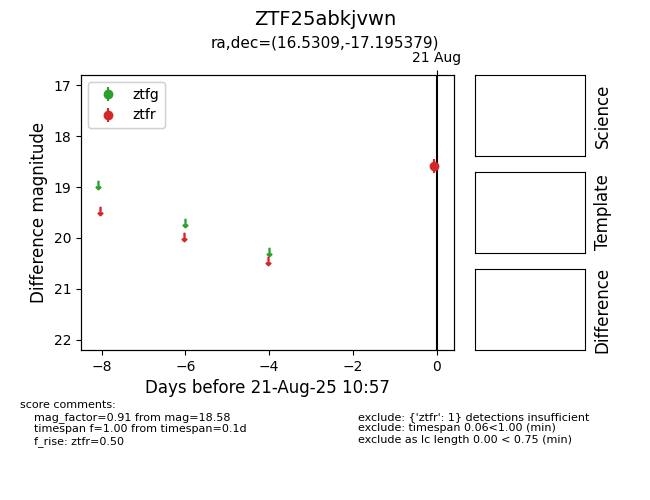

Target ZTF25abkjvwn at 2025-08-21 10:57, see:
FINK: fink-portal.org/ZTF25abkjvwn
Lasair: lasair-ztf.lsst.ac.uk/objects/ZTF25abkjvwn
ALeRCE: alerce.online/object/ZTF25abkjvwn
alt names
ZTF25abkjvwn (ztf,alerce)
coordinates:
equatorial (ra, dec) = (16.5309,-17.19538)
galactic (l, b) = (142.5523,-79.50336)
photometry
last ztfr=18.58
1 ztfr detections
